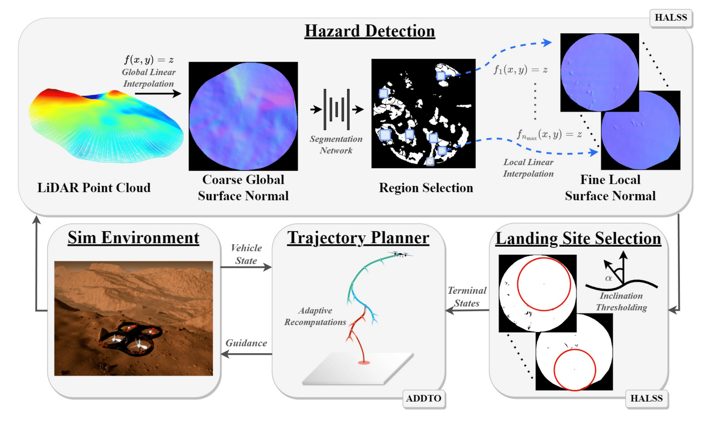
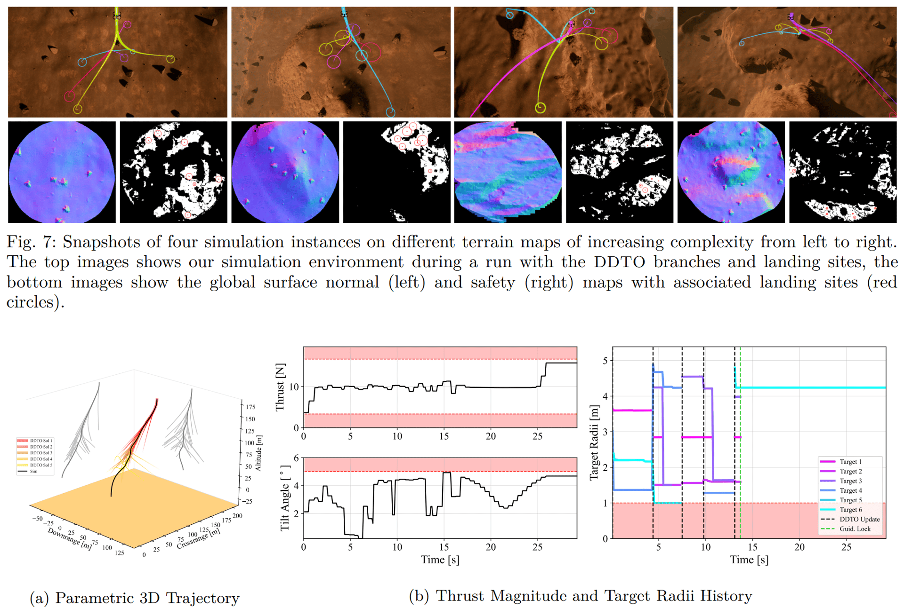

HALO: Hazard-Aware Landing Optimization
Choosing the landing site and the trajectory in one planning problem.
Overview
Landing on rough terrain requires two coupled decisions. The vehicle must identify a safe site and determine whether it can reach that site from its current state. Boulder fields on the Moon and crater rims on Mars are typical cases. Systems that separate site selection from trajectory planning can choose a landing site the vehicle cannot reach.
HALO (Hazard-Aware Landing Optimization) treats site selection and divert guidance as one problem. It evaluates candidate sites with terrain data from onboard perception. At the same time, it checks the feasibility and fuel cost of the trajectory to each site. The output is a safe landing site and the trajectory needed to reach it.
This work supports precision landing for lunar and planetary missions, where late hazard detection leaves little time and fuel to react.
Results & media
This page brings together the ICRA paper, source code, and demonstration videos.
Perception and planning loop
HALO couples terrain reasoning with trajectory generation. HALSS filters point-cloud terrain into safe landing zones. Adaptive-DDTO keeps multiple reachable targets alive while perception updates.
- PerceptionHazard-aware landing site selection from terrain point clouds.
- PlannerAdaptive deferred-decision trajectory optimization across candidate sites.
- ArtifactsICRA 2023 paper, HALO GitHub repository, and ACL demo videos.

